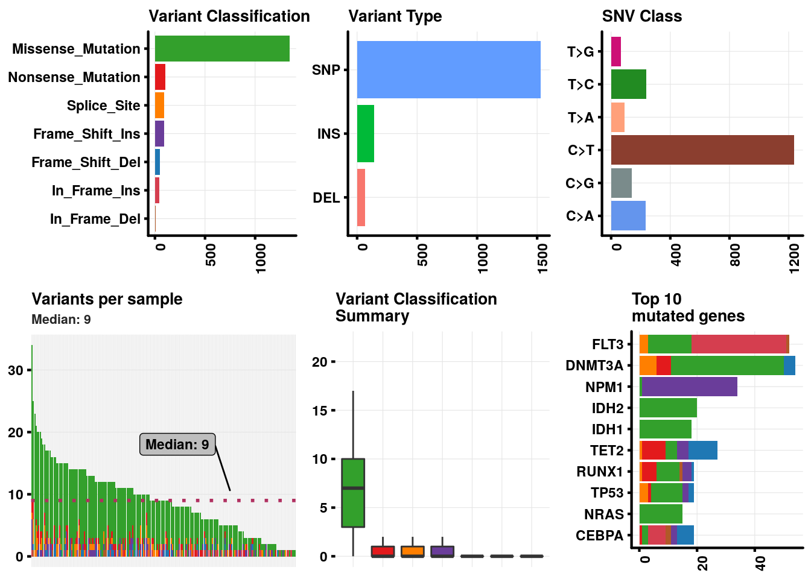
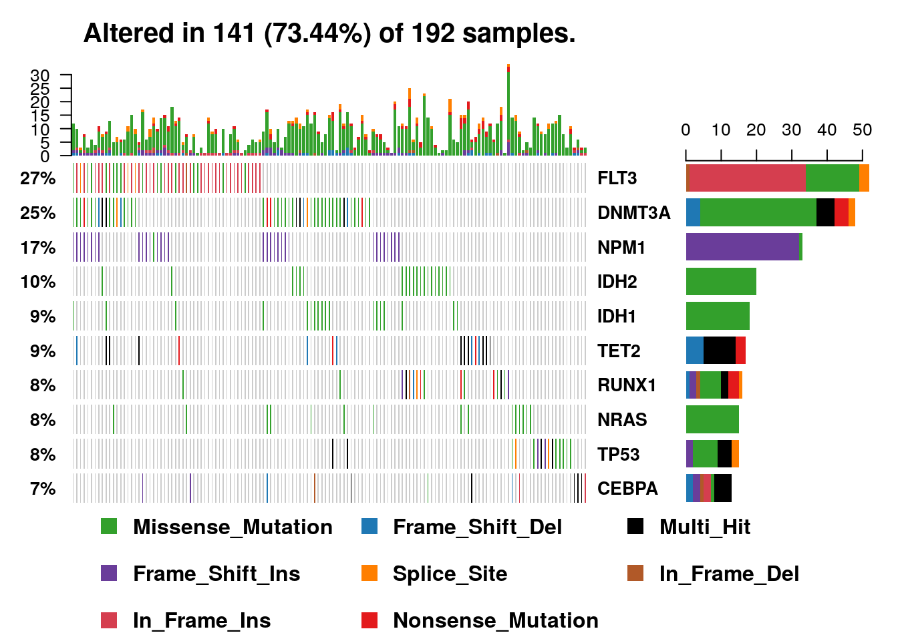
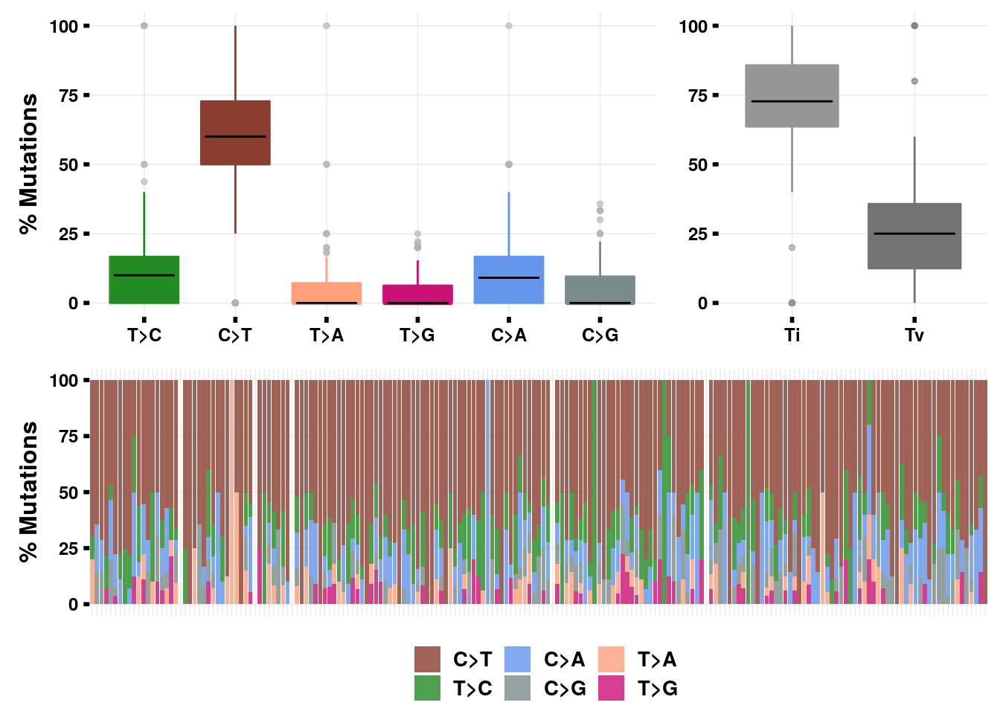

Chapter 6 Bioconductor
6.1 Introduction
The purpose of this section is to introduce you about the steps to install any R package from Bioconductor repository. We will demonstrate the installation and usage of Maftools package.
Bioconductor provides tools for the analysis and comprehension of high-throughput genomic data. Bioconductor uses the R statistical programming language, and is open source and open development. It has two releases each year, 1383 software packages, and an active user community.
Website: https://www.bioconductor.org/
6.1.1 Install
How to install Bioconductor
Open R and type following commands. You must be connected to internet.
source(“https://bioconductor.org/biocLite.R”)
biocLite()
How to install bioconductor packages biocLite(c(“GenomicFeatures”, “AnnotationDbi”))
Further details https://www.bioconductor.org/install/
6.1.2 Explore Bioconductor Tutorials
6.1.3 Explore course and conferences materials
6.1.4 Explore and Search for package using BiocViews
BiocViews allows you to browse through packages avaiable in Bioconductor. Packages are organized under different categories which will allow you to search easily.
https://www.bioconductor.org/packages/release/BiocViews.html#___Software
6.2 Explore Maftools
For demo purpose we will explore maftools [1].
Suppose you are doing a large scale sequencing project where you have done whole genome sequencing for ~100 patients and you have carried out variant detection pipeline to obtain variants (SNPs, Indels) in each sample. The variant information from each patient is aggregated in MAF file (Mutation Annotation Format. Now you want to analyze this MAF file. You searched in bioconductor for any pacakge that can help you to analyze MAF file and you came across maftools.
6.2.1 About MAFtools
With advances in Cancer Genomics, Mutation Annotation Format (MAF) is being widley accepted and used to store somatic variants detected. The Cancer Genome Atlas Project has seqenced over 30 different cancers with sample size of each cancer type being over 200. Resulting data consisting of somatic variants are stored in the form of Mutation Annotation Format. This package attempts to summarize, analyze, annotate and visualize MAF files in an efficient manner from either TCGA sources or any in-house studies as long as the data is in MAF format [2].
6.2.2 About MAF file
MAF files contain many fields ranging from chromosome names to cosmic annotations. However most of the analysis in maftools uses following fields.
Mandatoty fields: Hugo_Symbol, Chromosome, Start_Position, End_Position, Variant_Classification, Variant_Type and Tumor_Sample_Barcode.
Complete specififcation of MAF files can be found on NCI TCGA page.
6.2.3 Install maftools.
source(“https://bioconductor.org/biocLite.R”)
biocLite(“maftools”)
6.2.4 Load maftools library
6.2.5 Read example maf file
# laml file path
laml.maf = system.file('extdata', 'tcga_laml.maf.gz', package = 'maftools');
# read laml maf file
laml = read.maf(maf = laml.maf, useAll = FALSE);## reading maf..## Taking input= as a system command ('zcat < /home/priyabrata/R/x86_64-pc-linux-gnu-library/3.4/maftools/extdata/tcga_laml.maf.gz') and a variable has been used in the expression passed to `input=`. Please use fread(cmd=...). There is a security concern if you are creating an app, and the app could have a malicious user, and the app is not running in a secure envionment; e.g. the app is running as root. Please read item 5 in the NEWS file for v1.11.6 for more information and for the option to suppress this message.## --Using only `Somatic` variants from Mutation_Status. Set useAll = TRUE to include everything.## ---Oops! Mutation_Status not found. Assuming all variants are Somatic and validated.## silent variants: 475## ID N
## 1: Samples 157
## 2: 5'Flank 3
## 3: IGR 5
## 4: Intron 8
## 5: RNA 10
## 6: Silent 449## Summarizing..## ID summary Mean Median
## 1: NCBI_Build 37 NA NA
## 2: Center genome.wustl.edu NA NA
## 3: Samples 192 NA NA
## 4: nGenes 1241 NA NA
## 5: Frame_Shift_Del 52 0.271 0
## 6: Frame_Shift_Ins 91 0.474 0
## 7: In_Frame_Del 10 0.052 0
## 8: In_Frame_Ins 42 0.219 0
## 9: Missense_Mutation 1342 6.990 7
## 10: Nonsense_Mutation 103 0.536 0
## 11: Splice_Site 92 0.479 0
## 12: total 1732 9.021 9## Gene Summary..## Hugo_Symbol Frame_Shift_Del Frame_Shift_Ins In_Frame_Del
## 1: FLT3 0 0 1
## 2: DNMT3A 4 0 0
## 3: NPM1 0 33 0
## 4: IDH2 0 0 0
## 5: IDH1 0 0 0
## ---
## 1237: ZNF689 0 0 0
## 1238: ZNF75D 0 0 0
## 1239: ZNF827 1 0 0
## 1240: ZNF99 0 0 0
## 1241: ZPBP 0 0 0
## In_Frame_Ins Missense_Mutation Nonsense_Mutation Splice_Site total
## 1: 33 15 0 3 52
## 2: 0 39 5 6 54
## 3: 0 1 0 0 34
## 4: 0 20 0 0 20
## 5: 0 18 0 0 18
## ---
## 1237: 0 1 0 0 1
## 1238: 0 1 0 0 1
## 1239: 0 0 0 0 1
## 1240: 0 1 0 0 1
## 1241: 0 1 0 0 1
## MutatedSamples AlteredSamples
## 1: 52 52
## 2: 48 48
## 3: 33 33
## 4: 20 20
## 5: 18 18
## ---
## 1237: 1 1
## 1238: 1 1
## 1239: 1 1
## 1240: 1 1
## 1241: 1 1## Checking clinical data..## NOTE: Missing clinical data! It is strongly recommended to provide clinical data associated with samples if available.## Done !6.2.6 Print maf object
Summarized MAF file is stored as an MAF object. MAF object contains main maf file, summarized data and an oncomatrix which is useful to plot oncoplots (aka waterfall plots).
## An object of class MAF
## ID summary Mean Median
## 1: NCBI_Build 37 NA NA
## 2: Center genome.wustl.edu NA NA
## 3: Samples 192 NA NA
## 4: nGenes 1241 NA NA
## 5: Frame_Shift_Del 52 0.271 0
## 6: Frame_Shift_Ins 91 0.474 0
## 7: In_Frame_Del 10 0.052 0
## 8: In_Frame_Ins 42 0.219 0
## 9: Missense_Mutation 1342 6.990 7
## 10: Nonsense_Mutation 103 0.536 0
## 11: Splice_Site 92 0.479 0
## 12: total 1732 9.021 96.2.7 Structure of maf object
## Formal class 'MAF' [package "maftools"] with 8 slots
## ..@ data :Classes 'data.table' and 'data.frame': 1732 obs. of 17 variables:
## .. ..$ Hugo_Symbol : chr [1:1732] "ABCA10" "ABCA4" "ABCB11" "ABCC3" ...
## .. ..$ Entrez_Gene_Id : int [1:1732] 10349 24 8647 8714 23 64137 64241 25 55289 92370 ...
## .. ..$ Center : chr [1:1732] "genome.wustl.edu" "genome.wustl.edu" "genome.wustl.edu" "genome.wustl.edu" ...
## .. ..$ NCBI_Build : int [1:1732] 37 37 37 37 37 37 37 37 37 37 ...
## .. ..$ Chromosome : int [1:1732] 17 1 2 17 6 11 2 9 2 3 ...
## .. ..$ Start_Position : int [1:1732] 67170917 94490594 169780250 48760974 30554429 119031351 44079555 133760430 111542370 141011154 ...
## .. ..$ End_Position : int [1:1732] 67170917 94490594 169780250 48760974 30554429 119031351 44079555 133760430 111542370 141011154 ...
## .. ..$ Strand : chr [1:1732] "+" "+" "+" "+" ...
## .. ..$ Variant_Classification: Factor w/ 7 levels "Frame_Shift_Del",..: 7 5 5 5 5 5 5 5 5 5 ...
## .. ..$ Variant_Type : Factor w/ 3 levels "DEL","INS","SNP": 3 3 3 3 3 3 3 3 3 3 ...
## .. ..$ Reference_Allele : chr [1:1732] "T" "C" "G" "C" ...
## .. ..$ Tumor_Seq_Allele1 : chr [1:1732] "T" "C" "G" "C" ...
## .. ..$ Tumor_Seq_Allele2 : chr [1:1732] "C" "T" "A" "T" ...
## .. ..$ Tumor_Sample_Barcode : Factor w/ 192 levels "TCGA-AB-2802",..: 171 63 190 81 111 125 96 182 140 114 ...
## .. ..$ Protein_Change : chr [1:1732] "p.K960R" "p.R1517H" "p.A1283V" "p.P1271S" ...
## .. ..$ i_TumorVAF_WU : num [1:1732] 45.7 38.1 47 56.4 41 ...
## .. ..$ i_transcript_name : chr [1:1732] "NM_080282.3" "NM_000350.2" "NM_003742.2" "NM_003786.1" ...
## .. ..- attr(*, ".internal.selfref")=<externalptr>
## ..@ variants.per.sample :Classes 'data.table' and 'data.frame': 192 obs. of 2 variables:
## .. ..$ Tumor_Sample_Barcode: Factor w/ 192 levels "TCGA-AB-2802",..: 190 6 146 185 114 155 45 103 118 71 ...
## .. ..$ Variants : int [1:192] 34 25 23 21 20 20 20 19 18 18 ...
## .. ..- attr(*, ".internal.selfref")=<externalptr>
## ..@ variant.type.summary :Classes 'data.table' and 'data.frame': 192 obs. of 5 variables:
## .. ..$ Tumor_Sample_Barcode: Factor w/ 192 levels "TCGA-AB-2802",..: 190 6 146 185 45 114 155 103 71 118 ...
## .. ..$ DEL : int [1:192] 0 2 0 0 0 1 0 0 0 0 ...
## .. ..$ INS : int [1:192] 6 0 0 0 1 1 1 1 1 2 ...
## .. ..$ SNP : int [1:192] 28 23 23 21 19 18 19 18 17 16 ...
## .. ..$ total : num [1:192] 34 25 23 21 20 20 20 19 18 18 ...
## .. ..- attr(*, ".internal.selfref")=<externalptr>
## ..@ variant.classification.summary:Classes 'data.table' and 'data.frame': 192 obs. of 9 variables:
## .. ..$ Tumor_Sample_Barcode: Factor w/ 192 levels "TCGA-AB-2802",..: 190 6 146 185 45 114 155 103 71 118 ...
## .. ..$ Frame_Shift_Del : int [1:192] 0 1 0 0 0 1 0 0 0 0 ...
## .. ..$ Frame_Shift_Ins : int [1:192] 5 0 0 0 1 1 1 1 0 2 ...
## .. ..$ In_Frame_Del : int [1:192] 0 1 0 0 0 0 0 0 0 0 ...
## .. ..$ In_Frame_Ins : int [1:192] 1 0 0 0 0 0 0 0 1 0 ...
## .. ..$ Missense_Mutation : int [1:192] 25 16 22 15 16 15 16 15 17 11 ...
## .. ..$ Nonsense_Mutation : int [1:192] 2 3 0 1 1 3 2 1 0 2 ...
## .. ..$ Splice_Site : int [1:192] 1 4 1 5 2 0 1 2 0 3 ...
## .. ..$ total : num [1:192] 34 25 23 21 20 20 20 19 18 18 ...
## .. ..- attr(*, ".internal.selfref")=<externalptr>
## ..@ gene.summary :Classes 'data.table' and 'data.frame': 1241 obs. of 11 variables:
## .. ..$ Hugo_Symbol : chr [1:1241] "FLT3" "DNMT3A" "NPM1" "IDH2" ...
## .. ..$ Frame_Shift_Del : int [1:1241] 0 4 0 0 0 10 1 2 0 6 ...
## .. ..$ Frame_Shift_Ins : int [1:1241] 0 0 33 0 0 4 3 2 0 2 ...
## .. ..$ In_Frame_Del : int [1:1241] 1 0 0 0 0 0 1 0 0 2 ...
## .. ..$ In_Frame_Ins : int [1:1241] 33 0 0 0 0 0 0 0 0 6 ...
## .. ..$ Missense_Mutation: int [1:1241] 15 39 1 20 18 4 8 11 15 2 ...
## .. ..$ Nonsense_Mutation: int [1:1241] 0 5 0 0 0 8 5 1 0 1 ...
## .. ..$ Splice_Site : int [1:1241] 3 6 0 0 0 1 1 3 0 0 ...
## .. ..$ total : num [1:1241] 52 54 34 20 18 27 19 19 15 19 ...
## .. ..$ MutatedSamples : int [1:1241] 52 48 33 20 18 17 16 15 15 13 ...
## .. ..$ AlteredSamples : int [1:1241] 52 48 33 20 18 17 16 15 15 13 ...
## .. ..- attr(*, ".internal.selfref")=<externalptr>
## ..@ summary :Classes 'data.table' and 'data.frame': 12 obs. of 4 variables:
## .. ..$ ID : chr [1:12] "NCBI_Build" "Center" "Samples" "nGenes" ...
## .. ..$ summary: chr [1:12] "37" "genome.wustl.edu" "192" "1241" ...
## .. ..$ Mean : num [1:12] NA NA NA NA 0.271 0.474 0.052 0.219 6.99 0.536 ...
## .. ..$ Median : num [1:12] NA NA NA NA 0 0 0 0 7 0 ...
## .. ..- attr(*, ".internal.selfref")=<externalptr>
## ..@ maf.silent :Classes 'data.table' and 'data.frame': 475 obs. of 17 variables:
## .. ..$ Hugo_Symbol : chr [1:475] "ABCC11" "ACAN" "ACAT1" "ACCN2" ...
## .. ..$ Entrez_Gene_Id : int [1:475] 85320 176 38 41 59 284382 8728 56999 111 83440 ...
## .. ..$ Center : chr [1:475] "genome.wustl.edu" "genome.wustl.edu" "genome.wustl.edu" "genome.wustl.edu" ...
## .. ..$ NCBI_Build : int [1:475] 37 37 37 37 37 37 37 37 37 37 ...
## .. ..$ Chromosome : int [1:475] 16 15 11 12 10 19 5 3 3 15 ...
## .. ..$ Start_Position : int [1:475] 48244997 89401084 108009744 50452780 90695109 8808551 156920098 64532572 123071312 73045153 ...
## .. ..$ End_Position : int [1:475] 48244997 89401084 108009744 50452780 90695109 8808551 156920098 64532572 123071312 73045153 ...
## .. ..$ Strand : chr [1:475] "+" "+" "+" "+" ...
## .. ..$ Variant_Classification: chr [1:475] "Silent" "Silent" "Silent" "Silent" ...
## .. ..$ Variant_Type : chr [1:475] "SNP" "SNP" "SNP" "SNP" ...
## .. ..$ Reference_Allele : chr [1:475] "G" "C" "T" "C" ...
## .. ..$ Tumor_Seq_Allele1 : chr [1:475] "G" "C" "T" "C" ...
## .. ..$ Tumor_Seq_Allele2 : chr [1:475] "A" "T" "G" "G" ...
## .. ..$ Tumor_Sample_Barcode : chr [1:475] "TCGA-AB-2830" "TCGA-AB-2898" "TCGA-AB-2887" "TCGA-AB-3009" ...
## .. ..$ Protein_Change : chr [1:475] "p.I490I" "p.S1756S" "p.T185T" "p.L77L" ...
## .. ..$ i_TumorVAF_WU : num [1:475] 34.27 38.3 49.04 48.1 0.201 ...
## .. ..$ i_transcript_name : chr [1:475] "NM_032583.3" "NM_013227.2" "NM_000019.3" "NM_020039.2" ...
## .. ..- attr(*, ".internal.selfref")=<externalptr>
## ..@ clinical.data :Classes 'data.table' and 'data.frame': 192 obs. of 1 variable:
## .. ..$ Tumor_Sample_Barcode: Factor w/ 192 levels "TCGA-AB-2802",..: 190 6 146 185 114 155 45 103 118 71 ...
## .. ..- attr(*, ".internal.selfref")=<externalptr>6.2.8 Shows sample summry.
## Tumor_Sample_Barcode Frame_Shift_Del Frame_Shift_Ins In_Frame_Del
## 1: TCGA-AB-3009 0 5 0
## 2: TCGA-AB-2807 1 0 1
## 3: TCGA-AB-2959 0 0 0
## 4: TCGA-AB-3002 0 0 0
## 5: TCGA-AB-2849 0 1 0
## ---
## 188: TCGA-AB-2933 0 0 0
## 189: TCGA-AB-2942 0 0 0
## 190: TCGA-AB-2946 0 0 0
## 191: TCGA-AB-2954 0 0 0
## 192: TCGA-AB-2982 0 0 0
## In_Frame_Ins Missense_Mutation Nonsense_Mutation Splice_Site total
## 1: 1 25 2 1 34
## 2: 0 16 3 4 25
## 3: 0 22 0 1 23
## 4: 0 15 1 5 21
## 5: 0 16 1 2 20
## ---
## 188: 0 1 0 0 1
## 189: 1 0 0 0 1
## 190: 0 1 0 0 1
## 191: 0 1 0 0 1
## 192: 0 1 0 0 16.2.9 Show frequently mutated genes.
## Hugo_Symbol Frame_Shift_Del Frame_Shift_Ins In_Frame_Del
## 1: FLT3 0 0 1
## 2: DNMT3A 4 0 0
## 3: NPM1 0 33 0
## 4: IDH2 0 0 0
## 5: IDH1 0 0 0
## ---
## 1237: ZNF689 0 0 0
## 1238: ZNF75D 0 0 0
## 1239: ZNF827 1 0 0
## 1240: ZNF99 0 0 0
## 1241: ZPBP 0 0 0
## In_Frame_Ins Missense_Mutation Nonsense_Mutation Splice_Site total
## 1: 33 15 0 3 52
## 2: 0 39 5 6 54
## 3: 0 1 0 0 34
## 4: 0 20 0 0 20
## 5: 0 18 0 0 18
## ---
## 1237: 0 1 0 0 1
## 1238: 0 1 0 0 1
## 1239: 0 0 0 0 1
## 1240: 0 1 0 0 1
## 1241: 0 1 0 0 1
## MutatedSamples AlteredSamples
## 1: 52 52
## 2: 48 48
## 3: 33 33
## 4: 20 20
## 5: 18 18
## ---
## 1237: 1 1
## 1238: 1 1
## 1239: 1 1
## 1240: 1 1
## 1241: 1 16.2.10 Shows all fields in MAF
## [1] "Hugo_Symbol" "Entrez_Gene_Id"
## [3] "Center" "NCBI_Build"
## [5] "Chromosome" "Start_Position"
## [7] "End_Position" "Strand"
## [9] "Variant_Classification" "Variant_Type"
## [11] "Reference_Allele" "Tumor_Seq_Allele1"
## [13] "Tumor_Seq_Allele2" "Tumor_Sample_Barcode"
## [15] "Protein_Change" "i_TumorVAF_WU"
## [17] "i_transcript_name"6.2.11 Plotting MAF summary
## Warning: `legend.margin` must be specified using `margin()`. For the old
## behavior use legend.spacing## Warning: Removed 1 rows containing non-finite values (stat_boxplot).## Warning: `panel.margin` is deprecated. Please use `panel.spacing` property
## instead
6.2.12 Oncoplots
#We will draw oncoplots for top ten mutated genes. (Removing non-mutated samples from the plot for better visualization)
oncoplot(maf = laml, top = 10, removeNonMutated = TRUE);
6.2.13 Transition and Transversions.
laml.titv = titv(maf = laml, plot = FALSE, useSyn = TRUE);
#plot titv summary
plotTiTv(res = laml.titv);## Warning: `legend.margin` must be specified using `margin()`. For the old
## behavior use legend.spacing
6.3 Explore cummeRbund for Diffrential Gene Expression Analysis
cummeRbund: Allows for persistent storage, access, exploration, and manipulation of Cufflinks high-throughput sequencing data. In addition, provides numerous plotting functions for commonly used visualizations.
https://bioconductor.org/packages/release/bioc/html/cummeRbund.html
6.4 References
- https://bioconductor.org/packages/release/bioc/html/maftools.html
- Mayakonda, A. & Koeffler, H.P. Maftools: Efficient analysis, visualization and summarization of MAF files from large-scale cohort based cancer studies. bioRxiv (2016). doi: http://dx.doi.org/10.1101/052662